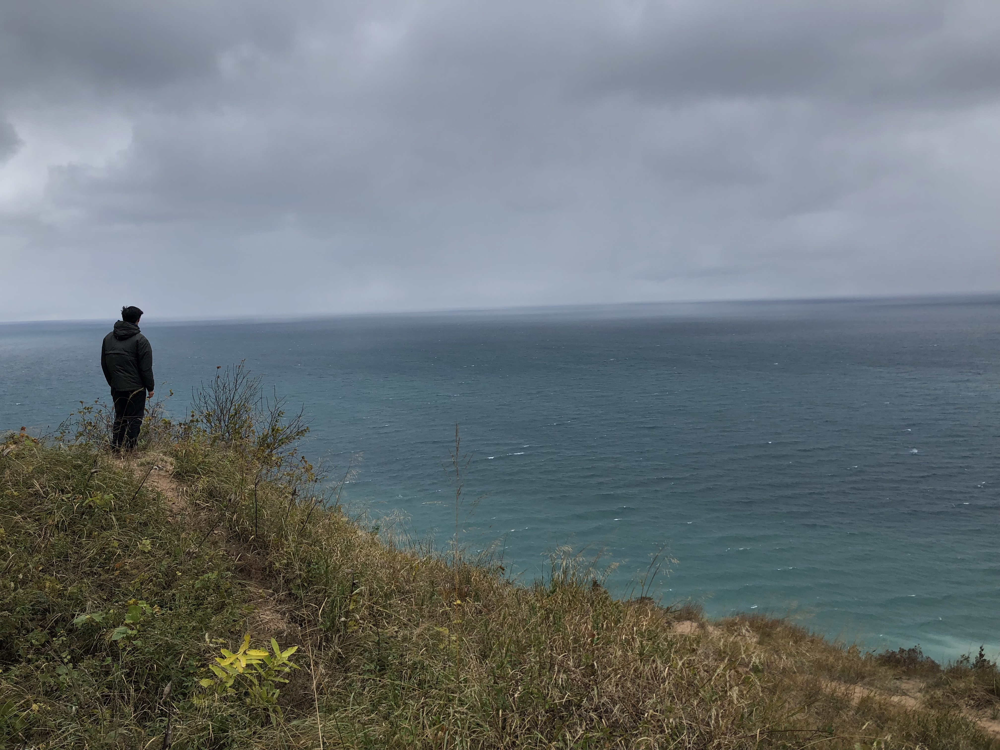

About
Sun 10 November 2019 by nolanfeeny
Nolan Feeny grew up in Okemos, MI and has lived there his whole life until moving to Ann Arbor for school in the fall of 2016. In his free time, Nolan enjoys being outside in nature, playing sports, and immersing himself in music.
Nolan is a senior studying Industrial & Operations Engineering at the University of Michigan. On campus, he has been an executive board member of MECC Consulting Group, principal cellist for the Campus Symphony Orchestra, and an admit to the Tauber Institute of Global Operations through the Engineering Global Leadership honors program. Before graduating from Okemos High School in 2016, he won multiple state-wide music awards and featured in the OHS Earth Club's first 'Green Tip of the Week'.
Pursuing a career in consulting or academia, he wants to use his life integrating engineering, tech, and business skills to maximize the amount of good in the world - through improving sustainability and social practices on a global scale.
Contact

Week 4
Berlin
The only thing we’ve done in Berlin this week is have a lot of class. Basically the goal by the end of the “semester” is to take given data from Traverse City regarding sun and wind speeds, and to model how to best implement a renewable energy system …
read moreWeek 3
Limited traveling this week. Stayed in Berlin for the weekend, which gave me a chance to learn more about culture and way of life in the city.

Olympic Stadium pool: So cool. I didn’t know the architecture was designed by Nazis, but it was indeed intimidating. Shout out Jesse …
read moreWeek 2
Not much happened in Berlin this week, but this weekend I went to a pretty cool city. I’ll talk about it.
AMSTERDAM

Amsterdam was probably the coolest city I’ve been to in my life. The train ride into the main city was nothing special. Then I walked out …
read moreWeek 1
Iceland

On my way to Berlin, I had a 19 hour layover in Iceland from July 5-6. Coincidentally, my uncle and two of his friends were also in Iceland during my time, so they were able to show me around Reykjavik. I arrived at around 11 am - most of my …
read morePre Study Abroad
The reason I made this blog is because I'm going to be leaving the U.S. to study abroad in Berlin, Germany from July 7 - August 18. Since I won't have regular access to my phone, I'm not sure how accessible I'll be. Facebook isn't usually where I want to …
read more